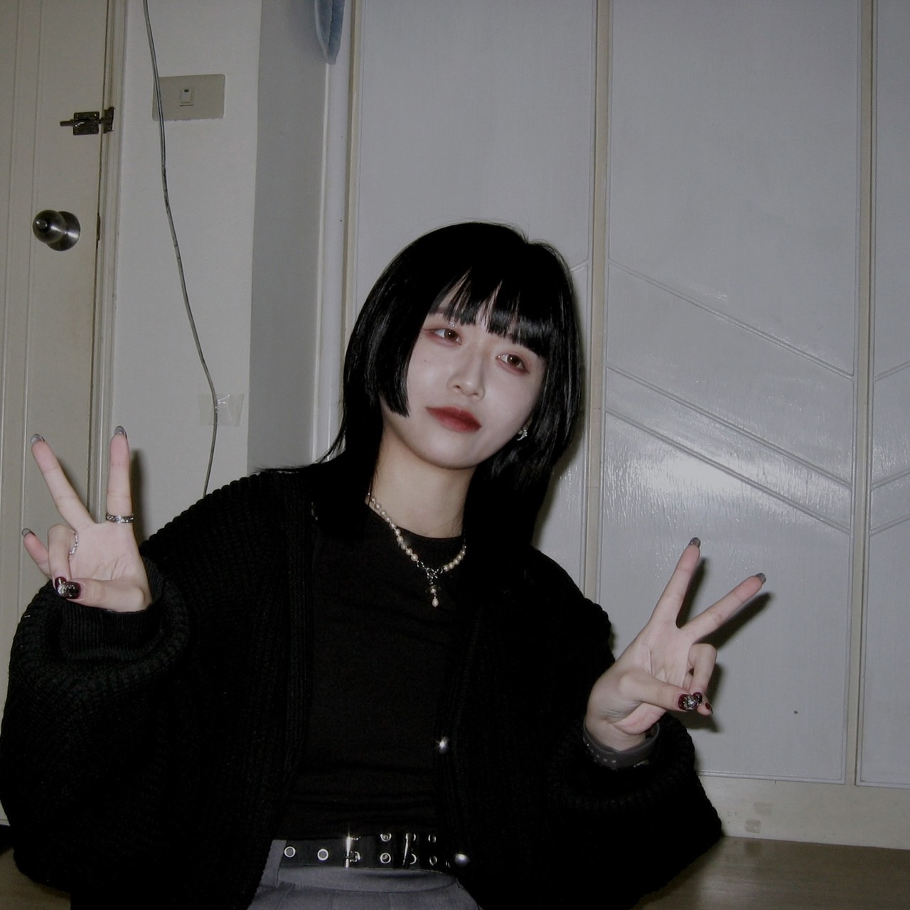

林昀蓁
我對科技充滿熱情，從網頁設計到資料分析，每門課都讓我更深入了解這個領域的挑戰和機會。同時，我對日本文化也很感興趣，正在自學日文。
我希望能夠將這兩者結合起來，開發出能夠橋接不同文化、不同領域的創新科技。我夢想著參與國際性的專案，與來自世界各地的優秀人才共同合作，創造出改變人們生活的技術和產品。
我相信，透過持續的努力和學習，我能夠成為一名在資訊科技領域中具有影響力的專業人才。
詹弼程
我熱愛攝影、電影、美食和露營。攝影讓我能捕捉生活中的美好瞬間，電影讓我深入探討各種故事和表現方式。
品嚐美食和享受睡眠是我生活中重要的一部分，而露營則是我放鬆身心的方式。
在資訊傳播學系的學習中，我努力將興趣與專業結合，期待未來能開創更豐富的人生體驗。
林禹丞
個性活潑外向，喜歡與人交流，分享生活中的點滴。我的興趣包括攝影、觀賞電影和聆聽音樂。
特別熱愛電影，對電影中所呈現的各種世界充滿好奇與嚮往，希望有機會深入了解電影製作的背後故事。
期待與大家一起探索生活的美好，分享彼此的經驗和心得！
連大維
我是一位新手DJ，同時也是熱愛打排球的球隊成員。音樂對我來說是情感表達和創意發散的方式，而排球則讓我展現戰鬥精神和團隊合作。
透過這兩者，我保持活力，培養積極參與的態度，並獲得豐富的人生體驗。
期待與志同道合的朋友們一同分享熱情，探索更多有趣的事物，創造難忘的時刻。